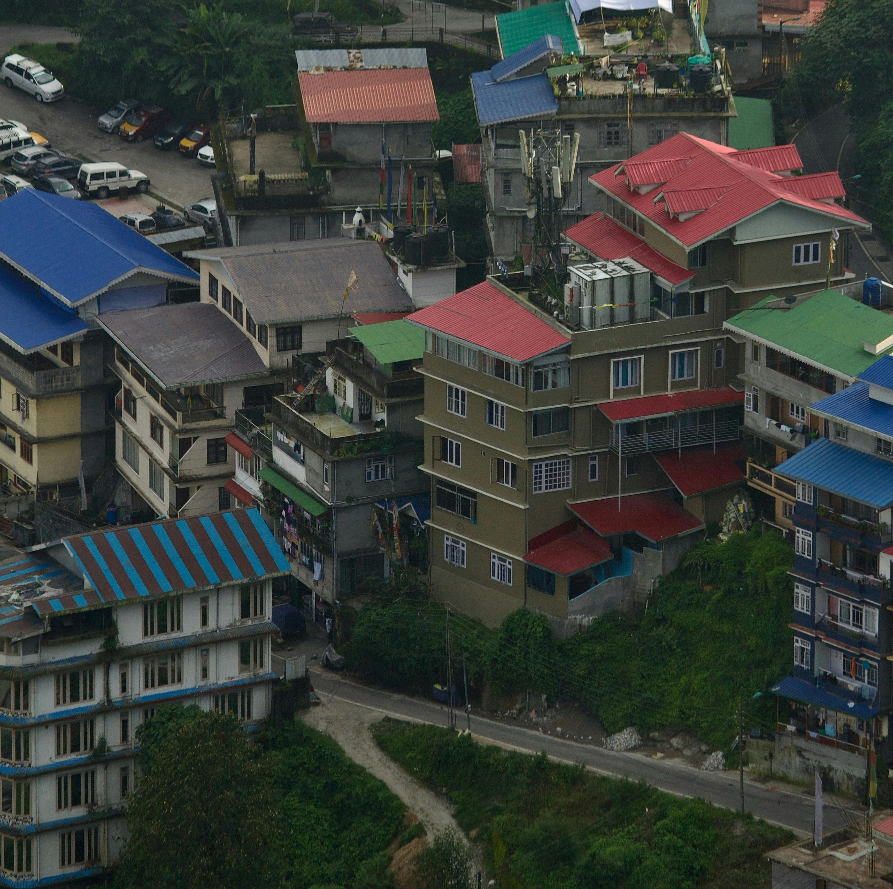

MUNNAR

LEH-LADAKH

Home to some of the world's highest mountains, a rich cultural heritage, its stunning natural landscapes, and its amazing cuisine, India is a large country located in southern Asia. The country contains 13,857 named mountains, the highest and most prominent of which is Kanchenjunga (8,586m/28,169ft).
The country of India (officially the Republic of India/Bhārat Gaṇarājya) is located in southern Asia in a region that’s known as the Indian subcontinent. With a total area of 3,287,263 square kilometers (1,269,219 sq. miles), India is the seventh largest country on Earth after Russia, Canada, China, USA, Brazil, and Australia. However, it rivals Argentina and Kazakhstan in terms of overall size. In addition to its mainland territory, India also contains a number of island territories, including the Andaman and Nicobar Islands and the Lakshadweep Islands. The country also boasts an impressive 7,516 km (4,670 mi) of coastline. India shares its land borders with a number of different countries, including Pakistan, China (Tibet), Nepal, Bhutan, Bangladesh, and Myanmar. It also has maritime borders with Sri Lanka, Maldives, Indonesia, and Thailand. Furthermore, India is one of the world’s most populous countries. With a population of more than 1.3 billion people, India is second to China in terms of overall population. Meanwhile, it is larger than the next 5 largest countries—United States, Indonesia, Pakistan, Brazil, and Nigeria—combined.